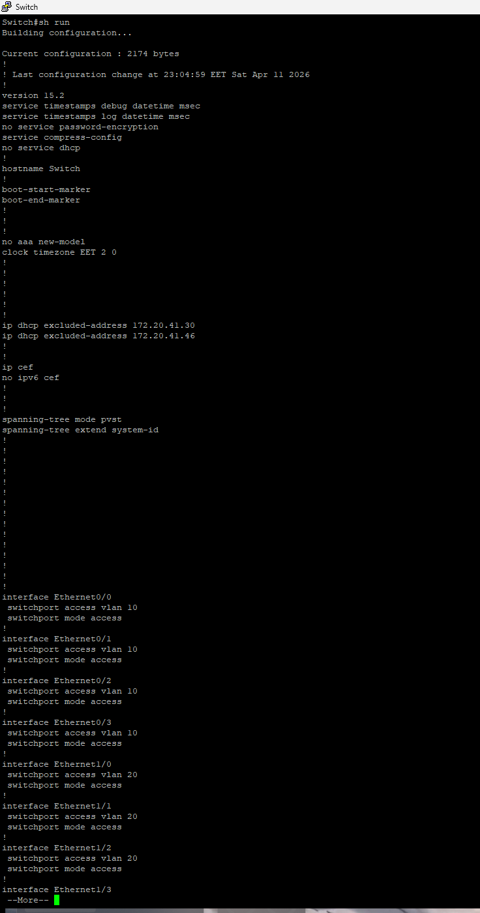
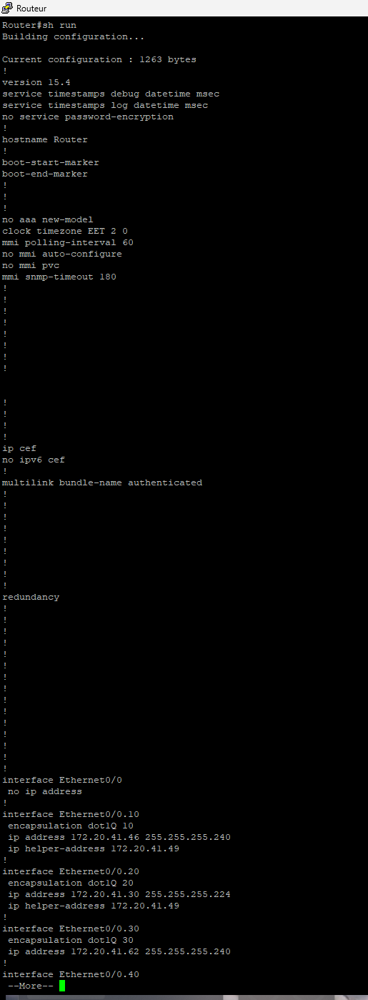
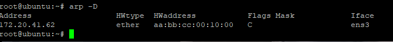
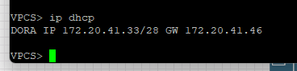
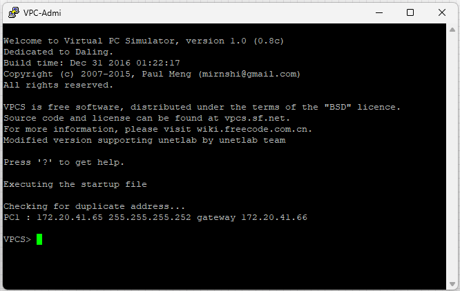
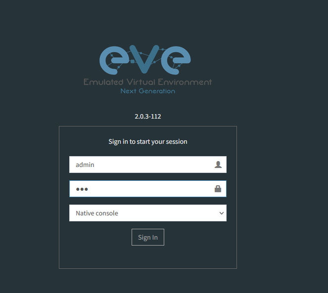
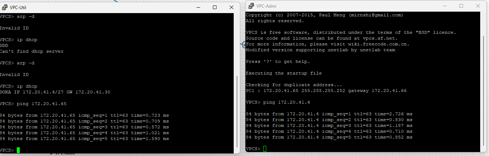
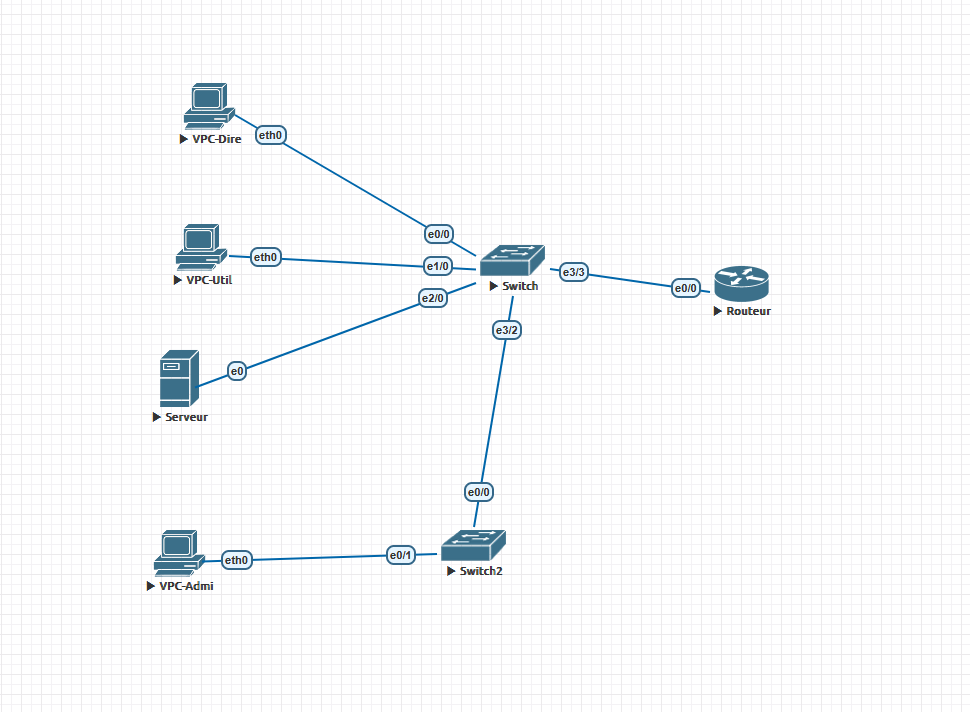

SAÉ 1.02 — BUT R&T IUT Colmar 2025–2026
S'initier aux réseaux informatiques
Infrastructure réseau multi-VLAN · Cisco IOS · EVE-NG · DHCP Linux · Wireshark
Configuration complète d'une infrastructure réseau pour une succursale de l'entreprise fictive "Rudy and Theodor Company" (RTC). Le projet consistait à mettre en place un réseau avec 4 VLANs distincts (Direction, Utilisateurs, Serveurs, Administrateur), implémenter le routage inter-VLAN, configurer un service DHCP sur Linux, analyser des trames 802.1Q avec Wireshark et déployer un second commutateur avec le protocole VTP.
Description du projet
🌐 Infrastructure VLANs
- 4 VLANs : Direction (Dire), Utilisateurs (Util), Serveurs (Serv), Administrateur (Admi)
- Adressage IP 172.20.x.0/24 découpé en sous-réseaux /29
- Cisco Catalyst 2960 (commutateur) + Cisco 2800 (routeur)
- Lab EVE-NG — simulation réseau
- VPC virtuels par VLAN pour tests ping/traceroute
⚙️ Services configurés
- Routage inter-VLAN (Router-on-a-stick, sous-interfaces)
- DHCP sur commutateur puis migration vers Linux Ubuntu
- IP Helper-address pour relai DHCP inter-VLAN
- Capture Wireshark de trames 802.1Q taggées
- VTP v2 (mode Server/Client) entre 2 commutateurs
🔧 Commandes Cisco IOS
- Configuration VLANs et trunks (802.1Q)
- Routage statique et sous-interfaces
- DHCP pool sur commutateur et routeur
- show running-config, show vlan, show ip route
- SSH management vers commutateur depuis VPC-Admi
Stack technique
Ce que j'ai appris
- Conception et mise en place d'une infrastructure réseau d'entreprise complète
- Configuration avancée Cisco IOS : VLANs, trunks, routage inter-VLAN
- Adressage IP et découpage en sous-réseaux (VLSM /29, /30)
- Déploiement d'un service DHCP sur Linux Ubuntu (isc-dhcp-server)
- Analyse de trames 802.1Q avec Wireshark
- Synchronisation de VLANs entre commutateurs avec VTP
Référentiel de compétences BUT R&T
Preuves
Fichier de configuration Cisco du commutateur 1 — Fichier de configuration Cisco du routeur — Fichier de configuration Cisco du commutateur 2.







